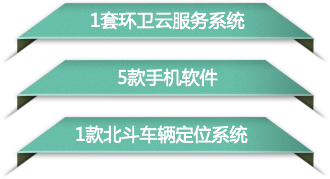

"以克论净"环卫云是"以克论净"环卫精细化管理模式的信息化支撑平台， 通过“定责任区、定责任人、定标准定时限、定奖罚”的“五定”管理措施， 综合监管工地及出入口、车辆道路遗撒、临街门前三包、流动摊位环境卫生等四类垃圾产生源头， 采用手机软件、车载北斗定位系统、移动网络、软件云服务（SAAS）、大数据分析等信息化技术手段， 通过建设环卫源头管控、五定优化配置、考勤考核、职工服务、工具管理等五个信息化系统， 实现智能管控、智能考勤、智能考核、智能派遣、智能监督、全程透明的长效管理机制。

 工地管理不到位
工地管理不到位
商户责任未落实
环卫工作效率低
环卫队伍缺关怀


总体思路
强化职工服务
严控源头
定岗定量
分层监管
长效可持续


环卫源头管控子系统
管理和设定车辆遗撒、商户门前、工地出口、流动摊位的环卫管控点位并监督上报违规事件
五定配置管理子系统
定区域、定人员、定任务、定标准、定奖罚，设定各项参数
考勤考核子系统
动态管理排班日程，移动考勤
职工服务子系统
提供以人为本的环卫职工服务平台
工具管理子系统
工具管理与工具培训管理
环卫工手机功能介绍
简单而实用的功能
（1）只需做三件事
1.上班前将手机开机
2.启动环卫手机软件
3.在工作期间，随身携带手机
（2）可选的辅助功能
1.查看通知公告、工作任务等信息
2.发现陈旧垃圾、门前三包等问题可通过手机软件举报
3.下班后可以查看当天考勤、考核情况，如果对处罚决定有
异议，可以向考核人员申诉
4.职工服务，一老一小服务管理、帮扶活动管理、业务活动组织
5.遇到紧急情况，可以一键报警
6.可以向上级领导主管申请千家
工作规范
（1）按规定上下班、无迟到早退
（2）按规定不准脱岗、坐岗、串岗、做于工作无关的事情
（3）责任区内发现地表垃圾后处理时间不超过5分钟
（4）上班期间骑乘电动环卫保洁车或步行对责任区进行快速巡检
（5）工作期间无故原地停留时间不超过10分钟
检测员手机功能介绍
主要功能
（1）检测责任区域内环卫工的工作情况
（2）检测道路浮尘重量：超过5克为不合格
（3）检查垃圾停留时间：发现地表垃圾，通过手机软件拍照上传到云端系统。
超过5分钟未处理的地表垃圾，检测员通过手机软件判定为检测 不合格。
（4）查询责任区域内的环卫工上岗情况
（5）查看系统下发的公职
（6）下班后可以查看当天考勤、检测情况。如果对处罚决定由异议，
可以向考核人员申诉
（7）针对突发环卫事件，发布任务，安排环卫工人处理
（8）环卫工请假审批
检测标准
（1）按规定上下班、无迟到早退
（2）按规定要求检测道路浮尘重量（5克）
（3）按规定要求检测垃圾停留时间（5分钟）
（4）每天对责任区域检测不少于3次
（5）工作期间无故原地停留时间不超过10分钟
考核员手机功能介绍
主要功能
（1）考核责任区内检测员和环卫工的工作情况
（2）抽查道路浮尘重量：核查检测员上报的5克检测结果
（3）抽查垃圾停留时间：发现地表垃圾，通过手机软件拍照
上传到云端系统。超过5分钟未处理的地表垃圾，检测员通过手机软件判定
为考核不合格
（4）查询责任区域内的检测员和环卫工上岗情况
（5）查看系统下发的通知
（6）查看当天考勤、考核情况。如果对处罚决定由异议，可以向督察员申诉。
（7）针对突发环卫事件，发布任务，安排环卫工人处理
（8）环卫工、检测员请假审批
考核标准
（1）按规定上下班、无迟到早退
（2）按规定要求检测道路浮尘重量（5克）
（3）按规定要求检测垃圾停留时间（5分钟）
（4）每天对责任区域考核巡查不少于2次
（5）工作期间无故原地停留时间不超过10分钟
督查员手机功能介绍
主要功能
（1）督察全市环卫工、检测员、考核员的工作情况
（2）检查询环卫工、检测员、考核员上岗情况
（3）查看系统下发的通知
（4）查看当天环卫工、检测员、考核员的考勤、考核情况
（5）针对突发环卫事件，发布任务，安排环卫工人处理
（6）环卫工、检测员、考核员请假审批